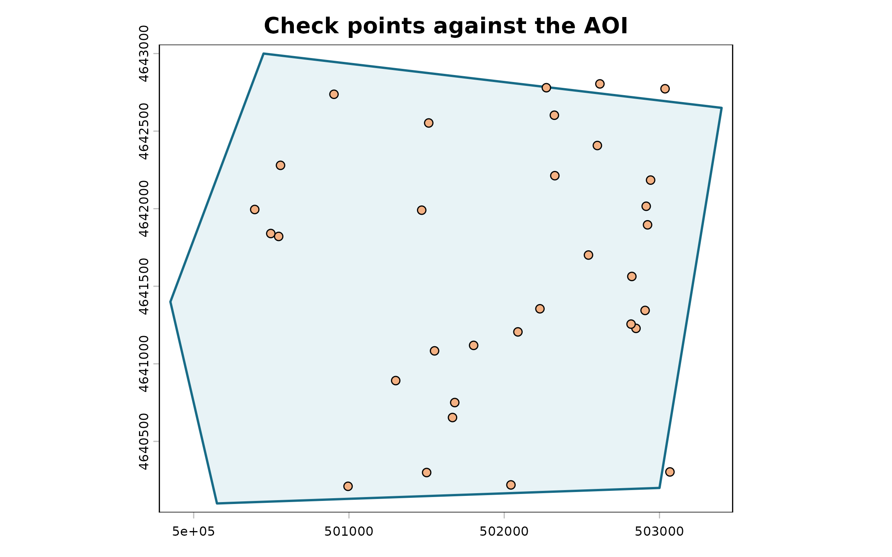

Input formats and coordinate systems
input-formats-crs.RmdDistance-based interpolation requires meaningful distances. A projected CRS is generally appropriate for local potentiometric mapping because grid resolution, padding, search distances, and gradients are then expressed in known linear map units.
Three supported point inputs
from_table <- ps_make_points(
synthetic_wells, "x", "y", "gw_elevation", "well_id", "EPSG:26916"
)
from_sf <- ps_make_points(
sf::st_as_sf(synthetic_wells, coords = c("x", "y"), crs = 26916),
value = "gw_elevation", name_col = "well_id"
)
from_terra <- ps_make_points(
vect(synthetic_wells, geom = c("x", "y"), crs = "EPSG:26916"),
value = "gw_elevation", name_col = "well_id"
)
data.frame(
input = c("data frame", "sf points", "terra SpatVector"),
rows = c(nrow(from_table), nrow(from_sf), nrow(from_terra)),
projected = c(!is.lonlat(from_table), !is.lonlat(from_sf), !is.lonlat(from_terra)),
crs = rep(crs(from_table, proj = TRUE), 3)
)
#> input rows projected
#> 1 data frame 32 TRUE
#> 2 sf points 32 TRUE
#> 3 terra SpatVector 32 TRUE
#> crs
#> 1 +proj=utm +zone=16 +datum=NAD83 +units=m +no_defs
#> 2 +proj=utm +zone=16 +datum=NAD83 +units=m +no_defs
#> 3 +proj=utm +zone=16 +datum=NAD83 +units=m +no_defsAssigning is not transforming
Assign a CRS only when the coordinate numbers already use that reference system. Transform when converting known coordinates to another CRS.
lonlat <- data.frame(
id = paste0("W", 1:6),
longitude = c(-92.99, -92.98, -92.97, -92.96, -92.95, -92.94),
latitude = c(34.50, 34.52, 34.51, 34.54, 34.53, 34.55),
head_ft = c(510, 505, 500, 496, 492, 487)
)
geographic <- ps_make_points(
lonlat, "longitude", "latitude", "head_ft", "id", "EPSG:4326"
)
projected <- project(geographic, "EPSG:26915")
data.frame(
object = c("assigned geographic", "transformed projected"),
is_longitude_latitude = c(is.lonlat(geographic), is.lonlat(projected)),
x_range = c(paste(round(range(crds(geographic)[, 1]), 3), collapse = " to "),
paste(round(range(crds(projected)[, 1]), 1), collapse = " to "))
)
#> object is_longitude_latitude x_range
#> 1 assigned geographic TRUE -92.99 to -92.94
#> 2 transformed projected FALSE 500918.2 to 505505.1Groundwater points may arrive in geographic coordinates, but map-distance support classification rejects longitude/latitude degrees. Transform to a suitable projected CRS before distance-based interpolation or classification:
if (is.lonlat(geographic)) {
message("Geographic coordinates detected; transform before distance-based interpolation.")
}
#> Geographic coordinates detected; transform before distance-based interpolation.This explicit check also makes horizontal units visible in the analysis record.
Actual missing-CRS error
missing_crs_message <- tryCatch(
ps_make_points(synthetic_wells, "x", "y", "gw_elevation", "well_id"),
error = function(e) conditionMessage(e)
)
missing_crs_message
#> [1] "`crs` is required when `data` is a coordinate table."Inspect extent, units, and AOI overlap
aoi <- ps_sample_aoi()
point_extent <- ext(from_table)
aoi_extent <- ext(aoi)
inside <- relate(from_table, aoi, "within")
data.frame(
check = c("projected coordinates", "same CRS", "points inside AOI", "linear unit"),
result = c(!is.lonlat(from_table), same.crs(from_table, aoi),
paste(sum(inside), "of", length(inside)), "metre")
)
#> check result
#> 1 projected coordinates TRUE
#> 2 same CRS TRUE
#> 3 points inside AOI 29 of 32
#> 4 linear unit metre
plot(aoi, col = "#e8f3f6", border = "#176b87", lwd = 2,
main = "Check points against the AOI")
plot(from_table, add = TRUE, pch = 21, bg = "#f4b183")
Before interpolation, verify the horizontal datum and units, vertical datum and head units, coordinate ranges, transformation pipeline, AOI overlap, and whether the projected CRS is suitable for the project location. Mismatched raster and vector CRSs should be transformed deliberately, not relabeled.